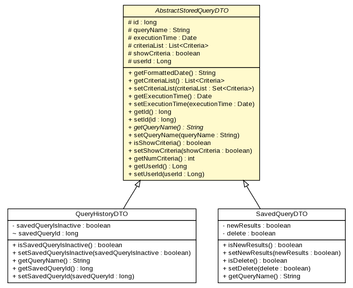

gov.nih.nci.ncia.dto
Class AbstractStoredQueryDTO

java.lang.Object
 gov.nih.nci.ncia.dto.AbstractStoredQueryDTO
gov.nih.nci.ncia.dto.AbstractStoredQueryDTO
- Direct Known Subclasses:
- QueryHistoryDTO, SavedQueryDTO
public abstract class AbstractStoredQueryDTO
- extends java.lang.Object
| Methods inherited from class java.lang.Object |
clone, equals, finalize, getClass, hashCode, notify, notifyAll, toString, wait, wait, wait |
id
protected long id
queryName
protected java.lang.String queryName
executionTime
protected java.util.Date executionTime
criteriaList
protected java.util.List<gov.nih.nci.ncia.criteria.Criteria> criteriaList
showCriteria
protected boolean showCriteria
userId
protected java.lang.Long userId
AbstractStoredQueryDTO
public AbstractStoredQueryDTO()
getFormattedDate
public java.lang.String getFormattedDate()
getCriteriaList
public java.util.List<gov.nih.nci.ncia.criteria.Criteria> getCriteriaList()
setCriteriaList
public void setCriteriaList(java.util.Set<gov.nih.nci.ncia.criteria.Criteria> criteriaList)
getExecutionTime
public java.util.Date getExecutionTime()
setExecutionTime
public void setExecutionTime(java.util.Date executionTime)
getId
public long getId()
setId
public void setId(long id)
getQueryName
public abstract java.lang.String getQueryName()
setQueryName
public void setQueryName(java.lang.String queryName)
isShowCriteria
public boolean isShowCriteria()
setShowCriteria
public void setShowCriteria(boolean showCriteria)
getNumCriteria
public int getNumCriteria()
getUserId
public java.lang.Long getUserId()
setUserId
public void setUserId(java.lang.Long userId)